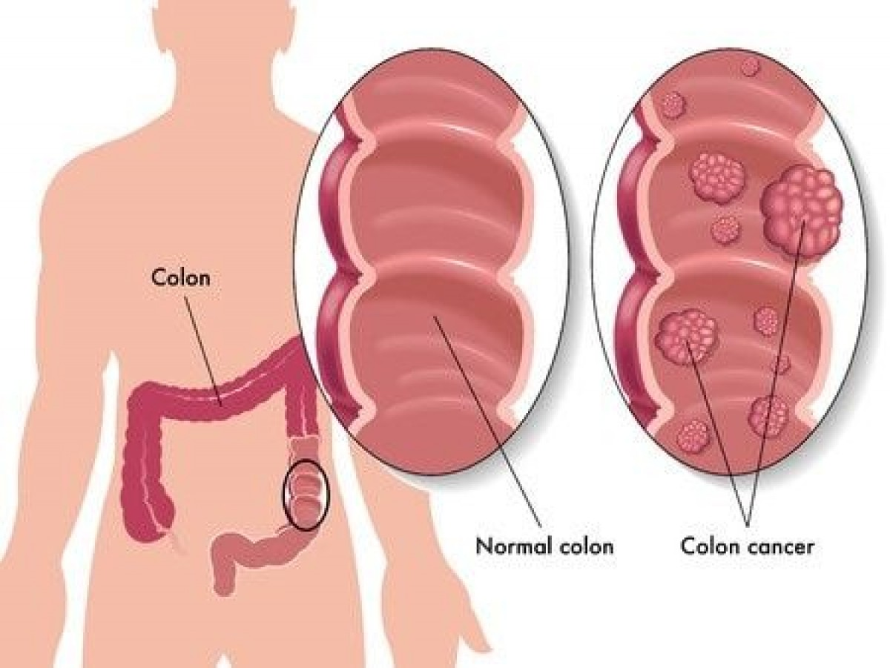
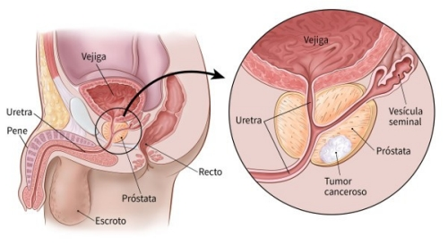
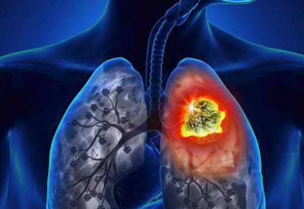
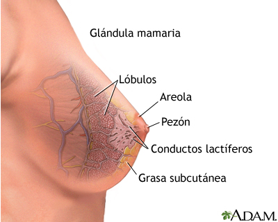
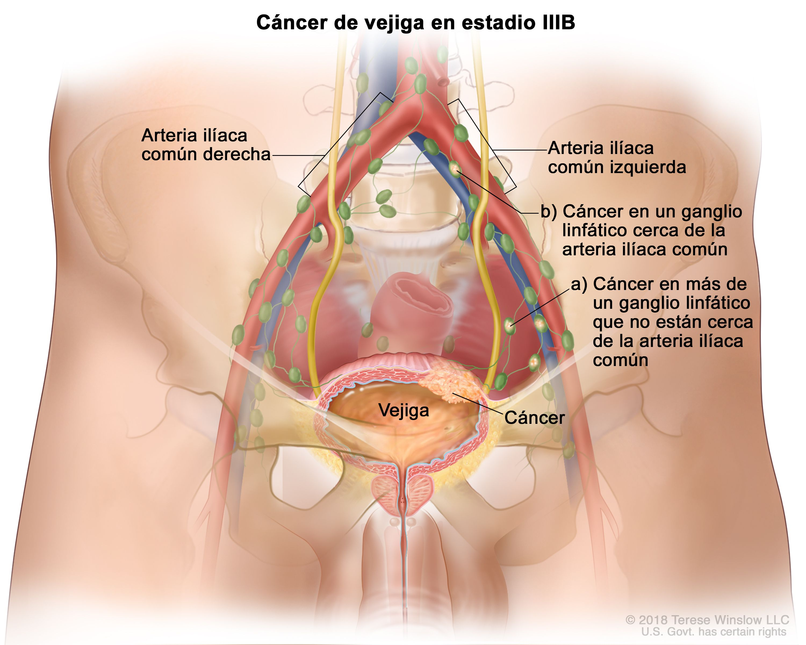
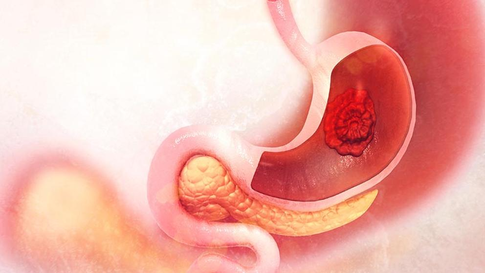
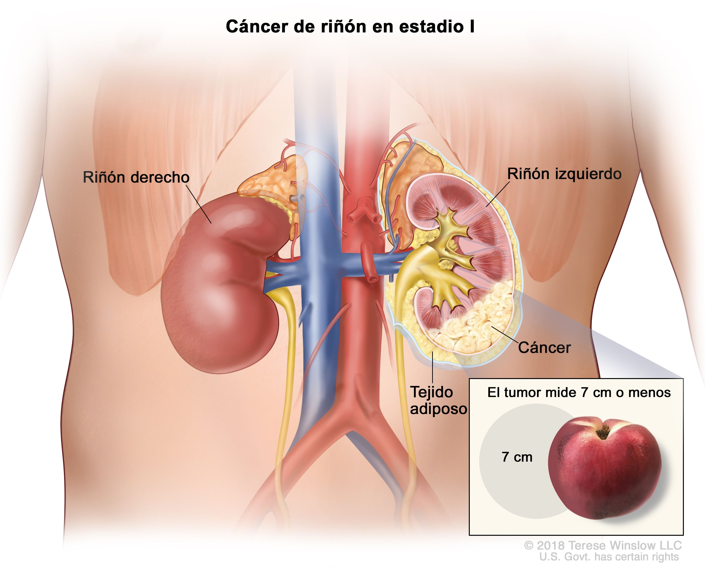
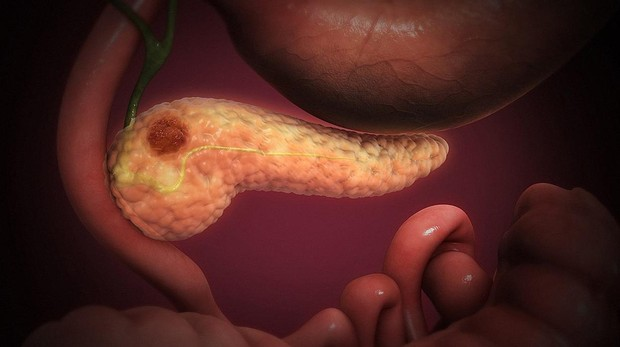
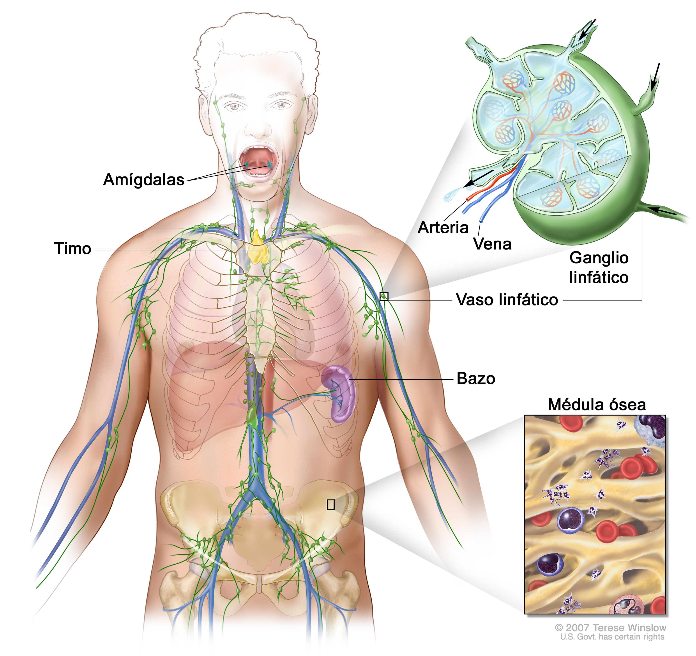
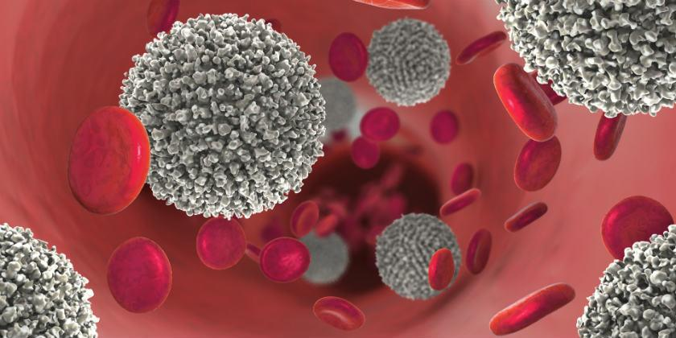

EL CANCER
| NUMERO | TIPO | IMAGEN | DESCRIPCIÓN |
|---|---|---|---|
1 |
CÁNCER COLORRECTAL O DE COLON |  | El cáncer de colon es un tipo de cáncer que comienza en el intestino grueso (colon). El colon es la parte final del tubo digestivo. El cáncer de colon suele afectar a los adultos mayores, aunque puede ocurrir a cualquier edad. Por lo general, comienza como grupos pequeños y no cancerosos (benignos) de células llamados pólipos que se forman en el interior del colon. Con el tiempo, algunos de estos pólipos pueden convertirse en cáncer de colon |
2 |
CÁNCER DE PRÓSTATA |  | El cáncer de próstata es un cáncer que ocurre en la próstata: una pequeña glándula en forma de nuez en los hombres que produce el líquido seminal que nutre y transporta el esperma. El cáncer de próstata es uno de los tipos más frecuentes de cáncer en los hombres. Por lo general, el cáncer de próstata crece lentamente y se limita inicialmente a la glándula prostática, donde puede no causar daños graves. Sin embargo, mientras que algunos tipos de cáncer de próstata crecen lentamente y pueden necesitar tratamiento mínimo o incluso ningún tratamiento, otros tipos son agresivos y se pueden diseminar rápidamente. |
3 |
CÁNCER DE PULMÓN |  | El cáncer de pulmón es un tipo de cáncer que comienza en los pulmones. Los pulmones son dos órganos esponjosos ubicados en el tórax que toman oxígeno cuando inhalas y liberan dióxido de carbono cuando exhalas. El cáncer de pulmón es la principal causa de muerte por cáncer en los Estados Unidos tanto en hombres como en mujeres. El cáncer de pulmón se cobra más vidas por año que todos los cánceres de colon, próstata, ovario y mama juntos. Las personas que fuman corren un mayor riesgo de padecer cáncer de pulmón, aunque es posible que aquellas que nunca hayan fumado también tengan este cáncer. |
4 |
CÁNCER DE MAMA |  | El cáncer de mama es un tipo de cáncer que se forma en las células de las mamas. Después del cáncer de piel, el cáncer de mama es el tipo más común diagnosticado en mujeres en Estados Unidos. El cáncer de mama se puede producir tanto en hombres como en mujeres; sin embargo, es mucho más común en las mujeres. |
5 |
CÁNCER DE VEJIGA |  | El cáncer de vejiga es uno de los tipos de cáncer más frecuentes y afecta a alrededor de 68.000 adultos por año en los Estados Unidos. El cáncer de vejiga se presenta con mayor frecuencia en hombres que en mujeres y, generalmente, afecta a adultos mayores, aunque puede aparecer a cualquier edad. El cáncer de vejiga comienza con mayor frecuencia en las células (células uroteliales) que revisten el interior de la vejiga, el órgano muscular y hueco que almacena la orina y que está ubicado en la parte inferior del abdomen. |
6 |
CÁNCER DE ESTÓMAGO |  | En general, el cáncer de estómago comienza en las células que recubren el estómago y producen mucosidad. Este tipo de cáncer se denomina «adenocarcinoma». Durante las últimas décadas, los índices de cáncer en la parte principal del estómago (cuerpo del estómago) se redujeron en todo el mundo. Durante el mismo período, se volvió más frecuente padecer cáncer en la parte superior del estómago (cardias), donde este se une con el extremo inferior del tubo de deglución (esófago). Esta zona del estómago se denomina «unión gastroesofágica». |
7 |
CÁNCER DE RIÑÓN |  | El cáncer renal comienza en los riñones. Los riñones son dos órganos con forma de frijoles, y cada uno tiene aproximadamente el tamaño de un puño. Están ubicados detrás de los órganos abdominales; hay un riñón a cada lado de la espina dorsal. En los adultos, el carcinoma de células renales es el tipo más frecuente de cáncer de riñón y representa aproximadamente el 90 por ciento de los tumores cancerosos. También pueden presentarse otros tipos menos frecuentes de cáncer de riñón. Los niños pequeños son más propensos a desarrollar un tipo de cáncer de riñón llamado «tumor de Wilms». |
8 |
CÁNCER DE PÁNCREAS |  | El cáncer de páncreas comienza en los tejidos del páncreas, un órgano en el abdomen que se encuentra detrás de la parte inferior del estómago. El páncreas libera enzimas que ayudan a la digestión y produce hormonas que ayudan a controlar la glucosa sanguínea. Se pueden presentar varios tipos de tumores en el páncreas, incluidos tumores cancerosos y no cancerosos. El tipo más común de cáncer que se forma en el páncreas comienza en las células que recubren los conductos que transportan las enzimas digestivas fuera del páncreas (adenocarcinoma ductal pancreático). |
9 |
LINFOMA NO HODGKIN |  | El linfoma no hodgkiniano es un tipo de cáncer que se origina en el sistema linfático, la red que combate las enfermedades y que se extiende por todo el cuerpo. En el linfoma no hodgkiniano, los tumores se forman a partir de linfocitos, un tipo de glóbulos blancos. El linfoma no hodgkiniano es más frecuente que el otro tipo general de linfoma, el linfoma de Hodgkin. Existen muchos subtipos diferentes de linfoma no hodgkiniano. Algunos de los subtipos más frecuentes son el linfoma difuso de linfocitos B grandes y el linfoma folicular. |
10 |
LEUCEMIA |  | La leucemia es el cáncer de los tejidos que forman la sangre en el organismo, incluso la médula ósea y el sistema linfático. Existen muchos tipos de leucemia. Algunas formas de leucemia son más frecuentes en niños. Otras tienen lugar, principalmente, en adultos. La leucemia, por lo general, involucra a los glóbulos blancos. Los glóbulos blancos son poderosos combatientes de infecciones; por lo general, crecen y se dividen de manera organizada, a medida que el cuerpo los necesita. Pero en las personas que tienen leucemia, la médula ósea produce glóbulos blancos anormales que no funcionan correctamente. |